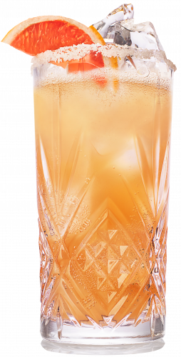

Salty Dog Cocktail

The Greyhound can be easily made, even in the blasting madness of a July sun, but it lacks a certain something. That certain something is the flavoursome contrast of a salty rim, once so configured you have the wickedly naughty SALTY DOG.
Ingredients
- 50 ml HENDRICKS GIN
- 100 ml Pink Grapefruit
- 15 ml Sugar Syrup
- Soda Water
Steps
- Assemble ingredients in a cocktail shaker over ice
- Stir to mix and then pour into a highball glass filled with ice
- Garnish with 3 thinly sliced rounds of cucumber & a lemon twist
Return to index